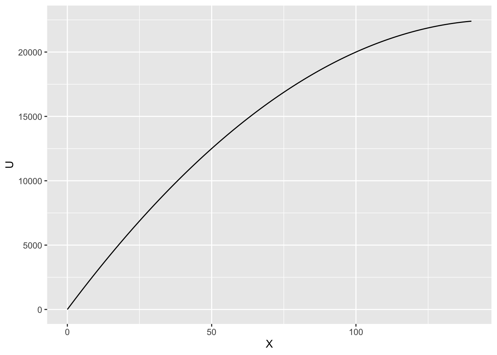
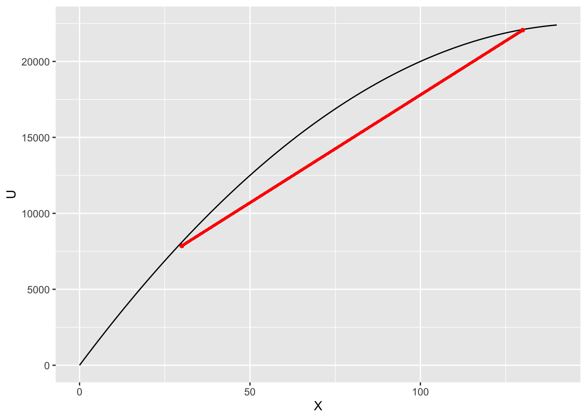

4 効用
いままでで、確率と統計の基礎を学習したので、つぎは効用について学習します。 次章から学ぶポートフォリオ理論では、投資家と投資対象の2つをモデル化し、最適な投資意思決定について考えます。
投資対象として株式や債券を中心に学習しますが、それらの投資対象をモデル化するさいに重要なことは、投資対象がもつリスクをどのように捉えるか、ということです。 そこでは、確率分布を用いてリスクをモデル化しました。つまり、投資対象がもたらすリターンのばらつきが大きい、つまり分散(あるいは標準偏差)が大きいとき、その投資対象はリスクが高い、とします。
つぎに投資対象に投資する主体である投資家の投資対象に対する選好をモデル化する必要があります。 ここに効用が登場します。
この節では，以下の項目について学習します。
- 効用関数
- リスク態度・リスク回避度
- 確実性等価
- リスクプレミアム
ファイナンスはリスクについて考える学問といえます。そして個人が負担するリスクを考える際、個人がリスクに対してどのような態度を持っているのか、を表現する必要があります。 そこで用いられる概念が効用(utility)となります。
株式の例で考えてみましょう。
例1 : 株価
株式Aと株式Bの2銘柄を考えます。 将来起こりうる状態が2つ(g、b)あり、それぞれの生起確率は(0.5, 0.5)とします。 これらのことは投資家にとって既知であると仮定します。 つまり、将来gかbのどちらかが等確率で生じることは知っているけれど、どちらが出るのかはわからない、という状況です。 株価は確率変数である、ということです。
株式Aは状態gで価格が100、状態bで価格が50となります。 株式Bは状態gで価格が120、状態bで価格が40となります。
このとき、投資家はどちらの株式を購入するでしょうか？ この投資家は自己の効用が最大になる選択肢を選ぶとします。
第3章で学習したの知識を用いて，株式AとBの期待値と標準偏差を求めてみましょう。 資産AとBの期待値は， \begin{aligned} \mathbb{E}[A] &= \frac 12 \times 100 + \frac 12 \times 50 = 75\\ \mathbb{E}[B] &= \frac 12 \times 120 + \frac 12 \times 40 = 80 \end{aligned} となり，資産Bの方が期待値が大きいことがわかります。 つぎに標準偏差を計算してみると， \begin{aligned} \sigma [A] &= \sqrt{ \frac 12 \times (100 - 75)^2 + \frac 12 \times (50 - 75)^2} = 25\\ \sigma [B] &= \sqrt{ \frac 12 \times (120 - 80)^2 + \frac 12 \times (40 - 80)^2} = 40 \end{aligned} となり，資産Bの方が標準偏差が大きいことがわかります。 資産価格の標準偏差や分散を，(risk)や(volatility)とよぶことがあります。 つまり，資産Bは期待リターンが高いが，リスクも高い投資先であることがわかりました。
4.1 効用関数
例2より，株式AはBよりも期待値は低くリスクも低い，そして株式BはAより期待値が高いもののリスクも高い，ということがわかりました。 では投資家は株式Aと株式Bのどちらの株式(1単位)を購入するのだろうか？ このとき，投資家の(risk preference)により，投資家がどちらの投資先をより好むのか，を考えることができます。
- リスクを回避する投資家は，株式Aを購入
- リスクを好む投資家は，株式Bを購入
このリスク選好を表現するために，効用関数を用いる。
財を消費することで得られる満足度を効用(utility)と呼び， 効用Uと財の消費量Xの関係を記述した関数を効用関数(utility function)といいます。 効用関数は実数値関数(real-valued function)，つまり消費量Xを実数に写像する関数です。 \begin{aligned} U :X \mapsto \mathbb{R} \end{aligned}
効用関数の形状で，経済主体(ここでは投資家)の財Xに対する選好(preference)を表すことができます。 ファイナンスでは，財Xとして，財の消費量の代わりに，富の大きさを用いることもあります(実は，富の大きさではなく，変化率(リターン)がよく利用されるのですが)。 先の例でいえば，将来の株価が50円になったときの効用水準はU(50)であり，100円になったときの効用水準はU(100)で表されます。
まず，重要な効用関数の性質について説明します。
単調性(monotonicity)
消費財や富の量が多いほど，効用は大きくなります。 つまり効用関数は消費や富の増加関数(increasing function)です。
効用関数が微分可能であることを仮定すると，単調性は U'(X) \geq 0
で表せます。
限界効用の低減
消費財や富の量が大きくなるほど，追加的に得られる1円あたりの消費や富がもたらす効用の増分が小さくなる，という仮定します。 つまり効用関数は凹関数(concave function)である，ということです。
効用関数が2階微分可能であることを仮定すると，限界効用の低減は， U''(X) \leq 0 を意味している。
例3：性質1と性質2を満たす効用関数の例
\begin{aligned} U(X) &= 300 X - X^2\\ U'(X) &= 300 - 2X \geq 0 \quad \mathrm{for } \quad x \leq 150\\ U''(X) &= -2 < 0 \end{aligned}
これをグラフにすると以下のようになります。
library(tidyverse)
library(ggthemes)
library(patchwork)
require(fontregisterer)
require(systemfonts)
mystyle <- list (# ggplotのテーマ
theme_few(),
theme(
text = element_text(
size=16, # フォントサイズ
family = "HiraKakuProN-W3" # ヒラギノフォント
)
)
)df <- data.frame(
X <- seq(0, 300, 1),
U <- 300*X - X^2
)
ggplot(df) + aes(x = X, y = U) + geom_path() + xlim(0,140)# + mystyle
4.1.1 期待効用最大化原理
数学者フォン・ノイマン(Von Neumann)と経済学者オスカー・モルゲンシュテルン(Oskar Morgenstern)によれば，一定の前提条件の下において，合理的な投資家は複数の投資案件からの選択にあたって最大の期待効用をもたらす投資案件を選択する，行動原理を構築しています。 このような期待効用に基づく投資家の選択行動を期待効用最大化原理とよんでいます。
例4
効用関数がU(X)=300X-X^2である場合，先の数値例に基づいて期待効用を計算する。
\begin{aligned} \mathbb{E}[U(A)] &= \frac 12 \times U(100) + \frac 12 \times U(50)\\ &= \frac 12 \times 20,000 + \frac 12 \times 12,500 = 16,250\\ \mathbb{E}[U(B)] &= \frac 12 \times U(120) + \frac 12 \times U(40)\\ &= \frac 12 \times 21,600 + \frac 12 \times 10,400 = 16,000 \end{aligned} したがって， \mathbb{E}[U(A)] \geq \mathbb{E}[U(B)] であるため，投資家は株式Aを購入する。
4.2 効用関数とリスク回避
確実なリターンを見込める債券投資とリターンが不確実な株式投資の2つの投資先について考えてみます。
例1の株式
例1の株式Aがもたらす利益の期待値は、 \mathbb{E}[A] = \frac 12 \times 100 + \frac 12 \times 50 = 75 でした。 株式Aの利益の期待値である75を確実に得られる債券Z_Aの(期待)効用は、 U( \mathbb{E}[A]) ] = U(75) = 300 \times 75 - 75^2 = 16875 となります。 利益が不確実な株式Aの期待効用は，
\begin{aligned} \mathbb{E}[ U (A)] &= \frac 12 U(100) + \frac 12 U(50)\\ &= \frac 12 \times 20000 + \frac 12 \times 12500\\ &= 16250 \end{aligned} となります。 つまり債券投資がもたらす期待値の効用U(\mathbb{E}[A])よりも，株式投資がもたらす期待効用\mathbb{E}[U(A)]の方が小さいため， 期待効用最大化の原理より，投資家は(不確実な)資産Aよりも確実な債権Z_Aを購入する、ということになります。
期待値が同じなら，投資家はリスクの少ない投資先を選択するのです。 効用関数が性質2を満たす限り，どのような投資資産Xを考えても，
\begin{aligned} \mathbb{E}[U(X)] \leq U(\mathbb{E}[X]) \end{aligned}
が成立する。この不等式をイェンセンの不等式(Jensen’s inequality)とよび、非常に重要な性質となります。 このような効用関数を持つ投資家をリスク回避的(risk averse)な投資家とよびます。
イェンセンの不等式
イェンセンの不等式は，凸関数の性質を表しています。 凸関数(convex function)とは，2点を結んだ線分が関数のグラフよりも上にあるような関数のことです。 実数値関数fが凸関数であるとは，任意のx_1, x_2 \in \mathbb{R}と任意の\lambda \in [0,1]に対して， f(\lambda x_1 + (1-\lambda)x_2) \leq \lambda f(x_1) + (1-\lambda)f(x_2) が成立することをいいます。 図にすると、次のようになります。
df <- data.frame(
X <- seq(0, 300, 1),
U <- 300*X - X^2
)
x1 <- 30
x2 <- 130
g <- ggplot(df) + aes(x = X, y = U) + geom_path() + xlim(0,140)# + mystyle
g <- g + geom_segment(aes(x = x1, y = U[x1], xend = x2, yend = U[x2]), color = "red", size = 1)
g <- g + geom_point(aes(x = x1, y = U[x1]), color = "red", size = 1)
g <- g + geom_point(aes(x = x2, y = U[x2]), color = "red", size = 1)
print(g)
効用関数の形状が投資家のリスクに対する選好を表します。 リスク回避的な投資家は，平均的に同じ消費(富)を得るならば，確実なものを選好します。
上の「例1の株式」の例を図示すると以下のようになります。 この株式Aがもたらす利益の期待値は75でした。 この投資家の効用関数は，
U(X) = 300X - X^2
でした。 上で計算したとおり，好景気時の利益100を得た場合の効用U(100) = 20,000で，不景気の利益50を得た場合の効用U(50)は12500です。それぞれ確率50％で生じるので，期待効用\mathbb{E}(U(X)]は16250でした。
この株式の期待利益75を確実に得ることができる場合の効用U(75)は16875となり，期待効用\mathbb{E}(U(X)]よりも大きくなります。つまりこの投資家はリスク(つまり結果のばらつき)を回避する傾向があるということです。
次に，リスク愛好型(risk lover)の効用関数をもつ投資家について考えてみましょう。 リスク愛好的な投資家とは，どのような株式投資Xを考えても，
\begin{aligned} \mathbb{E}[U(X)] \geq U(\mathbb{E}[X]) \end{aligned}
が成立する投資家をいいます。 先のリスク回避的な投資家とは対照的に，リスク愛好的な投資家は，同じ消費(富)を得るならば，不確実なものを選好します。 つまり，確実にもらえる100万円より，当たると200万，外れると0円といったギャンブルを好む投資家のことです。 このような投資家を想定することはほとんど無いため，ここでは詳細な説明は省略します。
リスク中立的(risk-neutral)な効用関数をもつ投資家は，どのような株式投資Xを考えても， \begin{aligned} \mathbb{E}[U(X)] = U(\mathbb{E}[X]) \end{aligned} が成立します。 このような効用関数をもつ投資家をリスク中立的な投資家と呼びます。 リスク中立的な投資家は，確実なものと不確実なものの選好に関して無 差別となり，リスクプレミアムがゼロとなります。
4.3 確実性等価とリスク割引額
次に，確実性等価について説明します。
確実性等価
確実性等価(certainty equivalent)とは，確率変数Xに対して， \begin{aligned} \mathbb{E}[U(X)] = U ( \hat X) \end{aligned} を満たす\hat Xを確率変数Xの確実性等価(certainty equivalent)とよびます。
つまり，効用の期待値が\mathbb{E}[U(X)]であるとき，確実に得られる値\hat Xの効用U ( \hat X)が\mathbb{E}[U(X)]と等しくなるような\hat Xの値を確実性等価とよびます。 リスク回避的な投資家は，
\begin{aligned} \mathbb{E}[U(X)] \leq U(\mathbb{E}[X]) \Leftrightarrow CE \leq \mathbb{E}[X] \end{aligned}
と言い換えることができます。
例6：株式Aのケース
例1で登場した株式Aの期待効用は， \begin{aligned} \mathbb{E}[U(A)] = 16250 \end{aligned} でした。 株式Aの期待値が確実に得られる証券Z_Aの効用は
\begin{aligned} U(Z_A) = U(\mathbb{E}[A]) = 16875 \end{aligned}
となります。 ここで，\mathbb{E}[U(A)] = 16250の効用を得るためには，Z_A = \hat Aをいくらに設定すればよいのかを考えてみましょう。 \begin{aligned} \mathbb{E}[U(A)] = 16250 &= U(\hat A)\\ 16250 &= 300 \hat A - \hat A^2\\ \hat A & \cong 70.94 \end{aligned}
確実性等価の解釈として，不確実な値をとる資産を確実な値をとる資産で評価したときの値，というものがあります。 つまり，不確実な値をとる資産の売価(selling price)とも解釈できます。
次に，リスク・ディスカウント額(risk discount)を考えてみましょう。
リスク・ディスカウント
確率変数Xの期待値\mathbb{E}[X]と確実性等価\hat Xの差を(RD)と呼ぶ。 \begin{aligned} RD = \mathbb{E}[X] - \hat X \end{aligned}
例7
例1の株式Aのリスク・ディスカウント額RD_Aは， \begin{aligned} RD_A = 75 - 70.94 = 4.06 \end{aligned} となります。
例8
例1の株式Bのリスク・ディスカウント額RD_Bは， \begin{aligned} RD_B = 80 - 69.38 = 10.62 \end{aligned} となります。
次のこの株式Aと株式BからなるポートフォリオPを考えてみましょう。
例9
例1の株式Aを1/2単位，株式Bを1/2単位ずつ投資するとします。 この投資家の効用関数はU(X)=300X - X^2であるとします。
4.4 効用関数の曲率とリスク回避度
曲率が大きいほど，リスク回避度が高いといえます。 たとえば，投資家の効用関数をV(X) = 500 X - X^2とします。
このとき，株式Aと株式Bがもたらす期待効用は， \begin{aligned} \mathbb{E}[V(A)] &= \frac 12 V(100) + \frac 12 V(50)\\ & = \frac 12 \times 40000 + \frac 12 \times 22500\\ & = 31250\\ \mathbb{E}[V(B)] &= \frac 12 V(120) + \frac 12 V(40)\\ & = \frac 12 \times 45600 + \frac 12 \times 18400\\ & = 32000 \end{aligned} となり，この効用関数V()をもつ投資家は，\mathbb{E}[V(A)] < \mathbb{E}[V(B)]となり，株式Bを選択します。
では次に確実性等価を計算してみます。 確実性等価は，期待効用が\mathbb{E}[V(A)]と等しくなるような確実な利益の量を計算します。